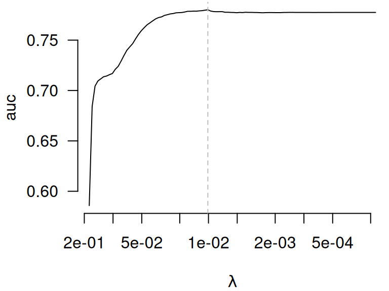

Other CV criteria
Patrick Breheny
Source:vignettes/articles/other-cv-criteria.rmd
other-cv-criteria.rmdBy default, cv.ncvreg() returns the cross-validated
deviance:
data(Heart)
X <- Heart$X
y <- Heart$y
cvfit <- cv.ncvreg(X, y, family='binomial')
head(cvfit$cve)
# [1] 1.286990 1.266179 1.243593 1.224601 1.208662 1.195316In addition, summary.cv.ncvreg() returns an estimated
R^2, signal-to-noise ratio (SNR), and
for logistic regression, a misclassification error (PE, for prediction
error):
head(summary(cvfit)$r.squared)
# [1] 0.003282658 0.023810623 0.045612276 0.063567043 0.078374606 0.090592299
head(summary(cvfit)$snr)
# [1] 0.00329347 0.02439140 0.04779219 0.06788211 0.08503955 0.09961682
head(summary(cvfit)$pe)
# [1] 0.3463203 0.3463203 0.3463203 0.3463203 0.3463203 0.3463203It is very important to note here that these measures are based on
out-of-sample CV predictions, and therefore not artificially inflated by
overfitting, as would happen if we used the predictions from
ncvreg() directly.
In addition, cv.ncvreg() offers the option to return the
cross-validated linear predictors (returnY=TRUE), which
allows the user to calculate any prediction criteria they wish. For
example, here is how one can calculate the cross-validated AUC using the
auc() function from the pROC package:
cvfit <- cv.ncvreg(X, y, family='binomial', returnY=TRUE)
auc <- apply(cvfit$Y, 2, pROC::auc, response=y, quiet=TRUE)
head(auc)
# [1] 0.5858133 0.6841163 0.7043978 0.7094681 0.7116204 0.7137314
plot(cvfit$lambda, auc, log='x', las=1, bty='n', xlab=expression(lambda),
xlim=rev(range(cvfit$lambda)), type='l')
abline(v=cvfit$lambda[which.max(auc)], lty=2, col='gray')